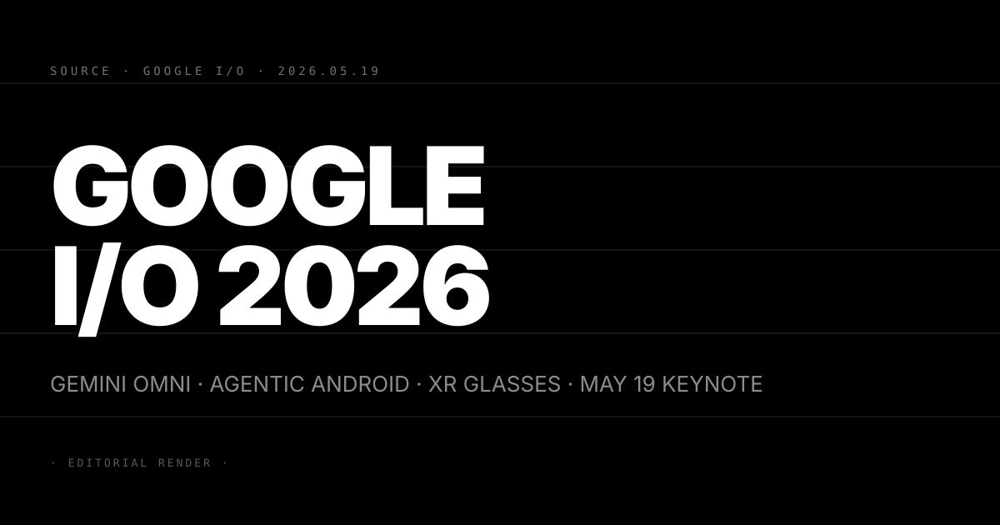
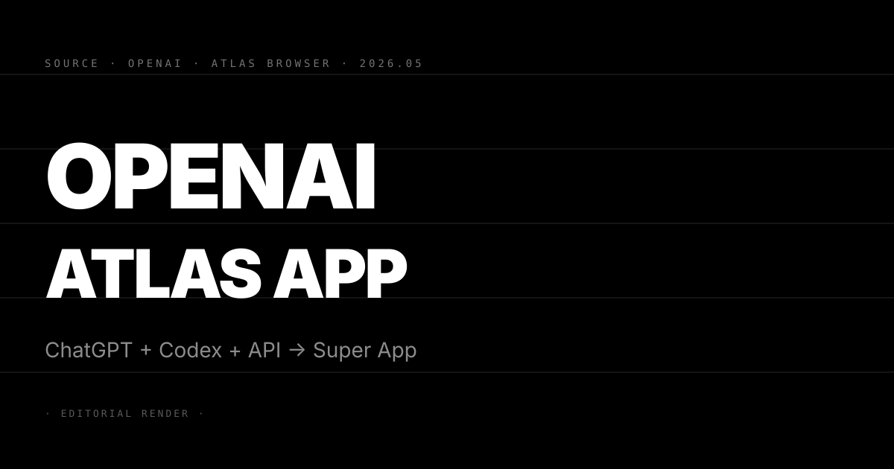
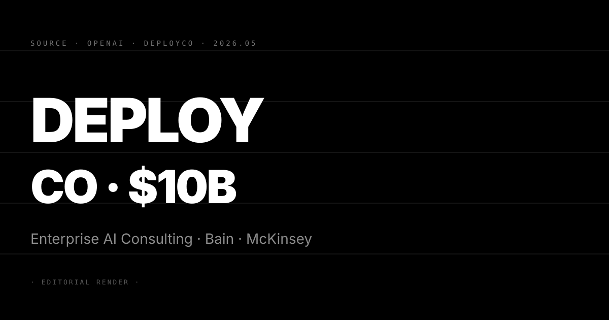

Pin · 年度最大 AI 秀開幕前夜 · Gemini Omni 是 Google 一年研發力的集中展示。
Google I/O 2026 主題演講定於 5 月 19 日，三條主線各有明確信號。其一，Gemini Omni 正式亮相。這是整合文字、圖像、影片、音訊的統一旗艦模型，代號 Omni 指跨模態的完整整合，對標 OpenAI GPT-5.5 Instant 的多模態路線。其二，Android 深度 agent 化。跨 App 多步驟代理、自動表單填寫、AI 自訂桌面 widget 等功能進入正式全球推送，延伸 5/17 N°92 Android Show 預先落地的代理能力。其三，Android XR 眼鏡公開預覽。Google 自研 XR 眼鏡整合 Gemini 語音識別與 AR 疊加，預計同場亮相。
多方消息顯示，發表陣容另有 Gemini Spark（輕量端側模型）與 Gemini 3.5 Pro。消息源標記「48h-fresh」，可信度高。Google DeepMind 在演算法研究方向亦有望同期公布，涵蓋 AlphaEvolve 下一代版本。
第一，AI 平台競爭軸正式從「模型能力」轉向「OS 整合深度」。Gemini 在 Android 的深度接入讓 Google 擁有逾 30 億台裝置作為 agent 執行環境。OpenAI Atlas 瀏覽器走的是類似邏輯，但缺乏 Google 在 OS 層的原生權限優勢，兩者是截然不同的入場路徑。
第二，XR 眼鏡的 AI 整合是 2026 年硬體競爭的新戰線。Meta Ray-Ban Meta 眼鏡已積累真實用戶，Apple Vision Pro 走高端 MR。Google 若成功整合 Gemini 即時語音與 AR 疊加，是第三條截然不同的定位，搶在 Apple WWDC（預計 6 月）前公開是明確的時間窗口選擇。
第三，Gemini Omni 的發表直接衝擊 OpenAI 的多模態護城河。OpenAI 的語音 AI 在 300ms 端到端延遲的工程突破（5/5 N°44）後確立先發優勢，Gemini Omni 若在 I/O 展示同等或更低延遲，多模態競爭格局將在 48 小時內重寫。
三個看點：
(1) I/O 後 48 小時的產業反應決定 Google 能否搶回敘事主動權。Google I/O 2025 的大量功能落地被批「PPT 落差大」，這次 Gemini Omni 的 demo 品質是市場判斷 Google AI 執行力的關鍵時刻，I/O 後一週的開發者採用率是客觀指標。
(2) Android XR 眼鏡若開放預購，將是 2026 年 H2 最受關注的 AI 硬體競賽起點。Meta Ray-Ban 正在準備升級版，Apple Vision 2 傳聞同期發酵。三方在 XR + AI 的路線同期逼近，2026 年 Q4 將是 XR AI 硬體的真實市場驗證節點。
(3) 反方觀點：Google 的執行力是長期信任缺口。Gemini 與 Android agent 功能若初期覆蓋率低（僅限 Pixel 與部分 Android 14/15 OEM），「30 億裝置」的敘事將在三個月內被現實打臉，碎片化是 Google 每次 Android 大功能的結構性風險。

Pin · 三條線合一 · OpenAI 從 AI 工具廠商轉型為全端平台的里程碑。
OpenAI 將 ChatGPT 消費產品、Codex 程式代理、開發者 API 三條原本獨立的產品線整合為單一產品團隊。戰略目標是打造含有 Atlas 瀏覽器的超級 App，以此為入口統一使用者的工作與創作流程。
Atlas 是 OpenAI 自研的 AI 原生瀏覽器，整合 ChatGPT 對話、Codex 程式碼生成、SearchGPT 搜尋與長期記憶四個核心模組，以統一介面替代 Chrome 的功能定位。這次產品整合背後是組織重組：三個前獨立部門合併為單一匯報給 CPO 的產品線。Codex 的 agent 能力直接嵌入 ChatGPT 前端，讓消費端用戶在對話中直接驅動 coding agent，不再需要切換工具。
第一，Atlas 瀏覽器讓 OpenAI 直接進入 Google 的核心護城河。Chrome 的全球瀏覽器市佔率約 65%，Atlas 不是在 Chrome 裡加插件，而是以 AI 原生架構正面替換 Chrome 作為使用者預設入口，這是 OpenAI 有史以來最直接的 Google 競爭宣言。
第二，ChatGPT + Codex 整合重新定義「AI assistant」的邊界。過去 ChatGPT 與 Codex 是兩個截然不同的使用情境。整合後，使用者在 ChatGPT 前端描述任務，Codex agent 直接執行並回傳結果，對話與執行之間的切換消失。這是 AI 助理從「回答問題」到「完成任務」的產品層轉型，對應 Anthropic Claude Code 面臨的直接競爭壓力。
第三，API 整合進同一平台對開發者生態有結構性影響。開發者過去需要分別管理 ChatGPT Plugins、Codex API、GPT API 三套工具，統一後開發複雜度下降。但同時，OpenAI 對應用生態的掌控度大幅提高，平台鎖定效應加強。
三個看點：
(1) Atlas 成敗關鍵在能否建立真實使用習慣。Opera Aria、Edge Copilot 等 AI 瀏覽器都未能替代主流瀏覽器。Atlas 需要在速度、擴充套件相容性、與現有工具整合上超越 Chrome，而非只在 AI 功能上領先。
(2) ChatGPT + Codex 整合是 Anthropic Claude Code 的直接威脅。Claude Code 的用戶黏性來自深度 coding agent 能力（5/3 N°30 Uber 4 月燒光全年 AI 預算案例），若 ChatGPT 前端無縫調用 Codex agent，Anthropic 的 coding 垂直護城河面臨正面壓縮。
(3) 反方觀點：三線強制整合的複雜度可能帶來品質回退。Codex 的技術用戶與 ChatGPT 的消費用戶需求存在根本差異，統一介面能否同時服務兩端是執行難點。短期內用戶體驗摩擦預期出現，是整合能否成功的前 90 天關鍵觀察窗口。

Pin · 管理顧問巨頭首次以股東身份進入 AI 廠商子公司 · 企業部署從「建議採購」跨入「廠商直接執行」。
OpenAI 正式成立企業 AI 諮詢子公司 DeployCo，啟動估值達 100 億美元（約 10 billion USD）。Bain & Company 與麥肯錫共同入股，以股東形式參與 AI 廠商子公司的組建，在行業內屬首次。DeployCo 的定位是協助大型企業從「評估 AI 可行性」跨入「直接部署 AI 工作流程」，提供技術整合、流程改造與變革管理的完整服務鏈。
這個動作與 Anthropic 同期成立的 Goldman Sachs 背書企業 AI 合資計畫（5/5 N°44）形成直接競爭。兩家前沿廠商的判斷一致：企業 AI 部署市場的下一個瓶頸不在模型能力，而在諮詢與整合能力。
第一，Bain 與麥肯錫的入股讓 AI 廠商首次進入企業決策的核心位置。過去企業採購 AI 的路徑是：顧問建議 → 採購工具 → 自行整合。DeployCo 把這條路縮短為：OpenAI + Bain/麥肯錫 直接進入企業，一站完成建議、採購與整合。Accenture、Deloitte 等傳統 IT 諮詢商的 AI 顧問業務面臨直接競爭。
第二，100 億美元估值把「AI 諮詢」從費用項目定錨為資本資產。兩家顧問以股東而非服務方身份加入，代表 Bain/麥肯錫把 DeployCo 的成功視為長期資本回報，而非短期顧問費收入。這個結構讓 DeployCo 能以更激進的方式進入大型客戶，不受按小時計費的傳統顧問邏輯限制。
第三，模型廠商直接進入諮詢市場改寫 AI 價值鏈的分潤結構。IT 諮詢商過去是 AI 廠商與企業之間拿走可觀服務費的中間層。DeployCo 繞過這個中間層，意味著 OpenAI 能夠觸及更大份額的企業 AI 預算，估計企業 IT 諮詢費的 15–25% 過去流向第三方服務商。
三個看點：
(1) DeployCo 的前 20 個企業客戶名單是判斷真實競爭力的關鍵指標。若客戶以 Fortune 500 為主，代表 Bain/麥肯錫的企業人脈轉化成功；若集中在科技新創，DeployCo 的定位較偏工程整合而非策略諮詢，對估值的長期支撐力有別。
(2) 傳統 IT 諮詢商的反應週期約 6 至 9 個月。Accenture、Deloitte、BCG 都已有 AI 諮詢部門，但模式多為「評估第三方工具」。若 DeployCo 成功，預期這些公司在 2026 年 Q4 提出反制，最快的選項是直接入股競爭的 AI 廠商。
(3) 反方觀點：AI 諮詢市場的規模效應仍未驗證。目前企業 AI 部署成功率偏低，核心障礙不在諮詢能力缺乏，而在組織變革阻力。若 DeployCo 無法同時解決「技術整合」與「組織接受度」兩條問題，100 億估值在 18 個月後面臨重估壓力。